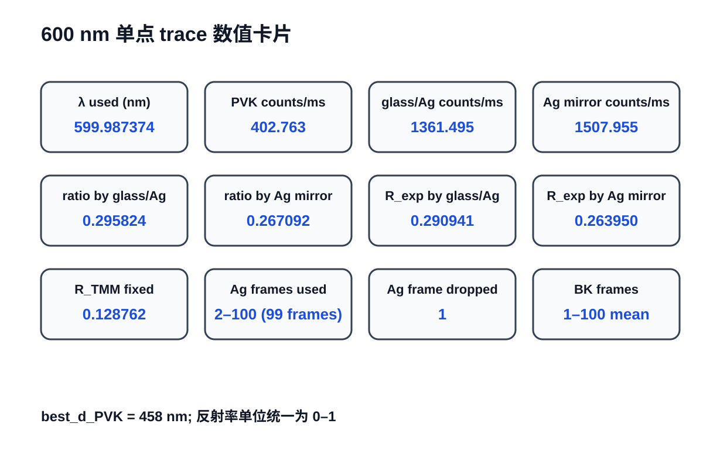

Phase 08 反射率校准与 TMM 审计 Technical Report
当前主审计对象：pvk_x01。本页补充 slide deck，用于组会前阅读，不替代主 deck。
1. 输入与版本
| 项 | 值 |
|---|---|
| calibrated csv | data/processed/phase08/reference_comparison/phase08_0429_dual_reference_calibrated_reflectance_pvk_x01.csv |
| theory csv | data/processed/phase08/reference_comparison/phase08_0429_dual_reference_tmm_theory_curves_pvk_x01.csv |
| manifest | data/processed/phase08/reference_comparison/phase08_0429_dual_reference_manifest_pvk_x01.json |
| trace report | results/report/phase08_reference_comparison_trace/phase08_0429_trace_600nm.md |
| nk source | resources/aligned_full_stack_nk_phase08_x01.csv |
2. 600 nm 单点关键值
| quantity | value |
|---|---|
| lambda_used_nm | 599.987374448794 |
| R_Exp_GlassPVK_by_GlassAg | 0.290941137959 |
| R_Exp_GlassPVK_by_AgMirror | 0.263950280877 |
| R_TMM_GlassPVK_Fixed | 0.128761870208 |
| R_TMM_GlassAg | 0.983493821013 |
| R_TMM_AgMirror | 0.988236844080 |
| counts_ratio_glassAg | 0.295824062889 |
| counts_ratio_AgMirror | 0.267092127214 |
| best_d_PVK_nm | 458 |
3. 审计状态
| 检查项 | 状态 | 说明 |
|---|---|---|
| target wavelength matched to nearest data point | PASS | target=600.000 nm, used=599.987374 nm, Δ=-0.012626 nm |
| Ag first frame excluded | PASS | Ag 第 1 帧显式剔除；若无 Ag trace 则不检查。 |
| Ag frames reduced by mean | PASS | Ag 用 frame 2–100 求 mean；BK 用 frame 1–100 求 mean。 |
| manual coherent formula vs coh_tmm | PASS | 一致性阈值 abs_diff <= 1.0e-08 |
| manual incoherent cascade vs CSV | PASS | 一致性阈值 abs_diff <= 1.0e-08 |
| experimental reflectance manual vs CSV | PASS | 手算实验反射率与输出 CSV 对比。 |
| PVK n,k suitability | WARNING | 当前只审计 output_tag=pvk_x01 对应 nk 来源，不能证明该 nk 全谱适用。 |
| specular-only TMM vs microscope measurement equivalence | WARNING | 公式自洽不等于显微镜实测必然等于理想 specular reflectance。 |
4. 主要图示



5. 解释
- 本轮 deck 不重算反射率或 TMM，只读取现有
pvk_x01结果集。 - 600 nm 单点 trace 已证明：公式实现、单层相干解析式、厚玻璃非相干级联与当前 CSV 输出自洽。
- 当前实验反射率仍显著高于理论值，说明剩余矛盾更可能落在实验链路、nk 适用性、显微收光和 specular-only 假设边界。